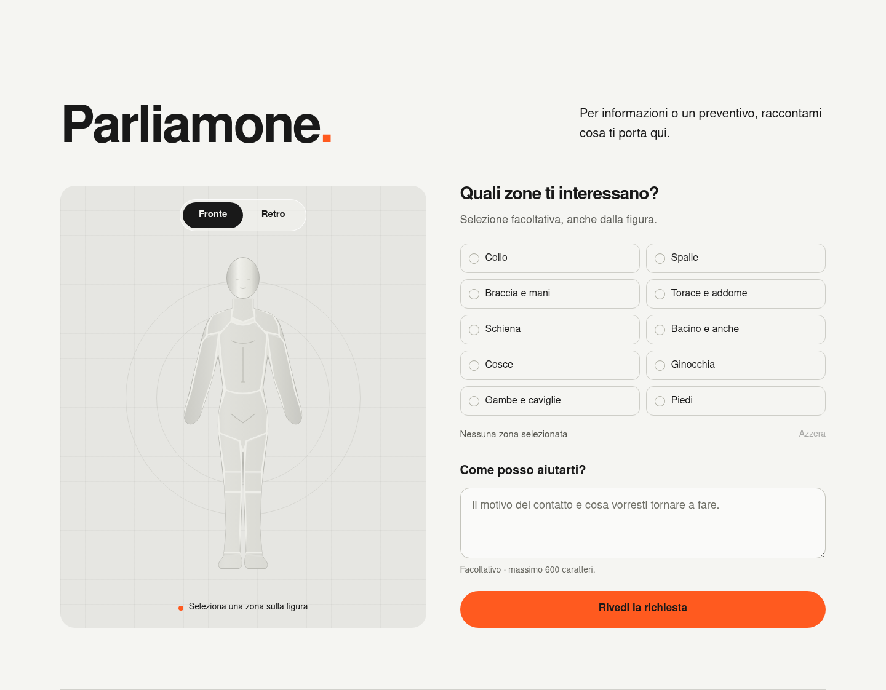

Una voce forte
Sans serif bold, titoli essenziali, corpo testo ampio. Nessun occhiello prima dei titoli.
Una base visiva per aiutare le persone a tornare a ciò che conta per loro. Diretta, sportiva, aperta anche alla vita di tutti i giorni.
Prima bozza da usare e affinare sul progetto. Le fondamenta riprendono la direzione approvata; le scale e gli stati sono una proposta di consolidamento.
Sans serif bold, titoli essenziali, corpo testo ampio. Nessun occhiello prima dei titoli.
Arancione sulle azioni e sui punti di attenzione. Superfici prevalentemente neutre.
Gallery allineata e gesti chiari. L’animazione accompagna una funzione.
Fa emergere l’azione. Il rapporto 60–30–10 è una guida alla composizione: chiaro, scuro, accento. Non una quota rigida per ogni sezione.
#F5F5F2Superficie principale#191919Testo e sezioni scure#FF5A1FAzione e selezioneRapporti calcolati su tinte piatte. Per il testo normale puntiamo ad almeno 4,5:1.
Il bianco sull’arancione non raggiunge 4,5:1. Anche l’arancione su fondo chiaro va riservato agli accenti grafici, non al corpo testo.
Sulle fotografie e sul vetro il contrasto dipende dall’immagine sottostante: va verificato nella composizione finale.
Nimbus Sans, regular e bold. Nel prototipo si chiama “Forma”: è un alias CSS. La famiglia definitiva resta una scelta aperta.
Corpo 20 px su desktop, 18 px su mobile. Interlinea 1,6. Titoli compatti, mai compressi al punto da perdere leggibilità.
| Ruolo | Desktop → mobile | Peso / interlinea |
|---|---|---|
| Display / hero | fino a 112 → 48 px | 700 / 1,02 |
| Titolo di sezione | fino a 64 → 38 px | 700 / 1,02 |
| Titolo di blocco | 25 → 25 px | 700 / 1,2 |
| Corpo principale | 20 → 18 px | 400 / 1,6 |
| Pulsanti e controlli | 16 → 16 px | 700 / 1,3 |
| Note di supporto | 14 → 14 px | 400 / 1,5 |
Questa scala è da consolidare: il prototipo ha ancora eccezioni espressive, fra cui i titoli della gallery fino a 86 px. Le note piccole non introducono mai i titoli.
Una scala basata su 4 px, con intervalli più ampi per separare idee e sezioni. I poster restano geometrici, i controlli diventano morbidi.
Contenitore fino a 1440 px. 12 colonne desktop, 4 mobile; i moduli usano allineamenti comuni. Gap di 24 px, 16 px su mobile.
Compatto fino a 700 px, intermedio fino a 1000 px. Le colonne si impilano; la gallery mantiene lo scorrimento orizzontale.
Scala e griglia sono regole nuove da applicare progressivamente. Non tutte le distanze attuali sono già normalizzate. Angoli morbidi a 25 px restano una variante della navbar, non un secondo stile da mescolare.
Prova hover, focus da tastiera e selezione. Una sola azione primaria per gruppo; il testo del pulsante descrive cosa succederà.
Esempi interattivi: nessuna richiesta viene inviata.
La selezione usa testo, segno di spunta e stato accessibile, oltre al colore. Area di interazione proposta: almeno 44 × 44 px.
La domanda parte dalla vita quotidiana della persona. Etichetta sempre visibile, anche durante la compilazione.
Un titolo comprensibile, un controllo da tastiera e una risposta breve. Il focus resta visibile; l’informazione essenziale non dipende dall’hover.
Focus proposto a doppio anello chiaro/scuro. Errori e conferme di invio saranno definiti insieme al flusso di contatto reale; non ci sono ancora stati clinici o colori semantici approvati.
Logo e CTA rimangono insieme, al centro, in due pillole della stessa larghezza e altezza. Le voci scompaiono mentre la barra si restringe. Sul sito lo scroll verso l’alto la riapre.
Uscita delle voci, poi collasso dopo 150 ms. Restringimento: 640 ms, curva cubic-bezier(.22,.8,.25,1). Uscita voci: 120 ms. Ingresso: 180 ms con attesa di 640 ms. Feedback dei controlli: 180 ms.
Vetro chiaro al 61%, blur di 22 px, bordo bianco traslucido. Se il blur non è supportato, fondo pieno chiaro. Con movimento ridotto, cambio di stato immediato.
Questo campione mostra la transizione tramite pulsante; su schermi piccoli parte già compatto. Per provare scroll, menu mobile e gestione del focus usa il prototipo completo.
Corpi in movimento, dettagli funzionali, momenti di vita reale. Bianco e nero per lasciare all’arancione un ruolo preciso.
Ritrovare il proprio ritmo.
Sei card segnaposto, stessa linea di partenza, stessa altezza. Numero grande, titolo bold, testo essenziale e un solo controllo arancione.
Swipe, trascinamento, pulsanti e tastiera accompagnano la stessa esplorazione. Nessuna rotazione o sfalsamento.
Fotografia di concept generata e servizio segnaposto. Catalogo e immagini reali devono ancora essere confermati.
Ascoltiamo, valutiamo, scegliamo insieme, iniziamo. Un racconto navigabile con pulsanti e tastiera, senza avanzamento automatico.
Esplora la prima visitaIl corpo interattivo aiuta a descrivere una necessità. Il modulo vive nella pagina Parliamone, dedicata a informazioni e preventivi.

Più macroaree selezionabili, fronte e retro sincronizzati, alternativa testuale, possibilità di cancellare e proseguire senza selezioni. Riepilogo modificabile prima di qualsiasi invio.
Illustrazione, proporzioni, etichette e dimensioni delle aree restano da affinare. Non offre diagnosi e non promette un trattamento in base al punto selezionato.
Nel prototipo i dati restano in memoria, non vengono inviati né salvati. Il canale di contatto reale e i relativi stati sono da progettare.
La persona partecipa alle decisioni del percorso. Il racconto collega il movimento alle attività che vuole ritrovare, senza attribuire colpe o promettere risultati.
Ascolto, obiettivi concreti e scelte condivise. Verbi diretti: capire, scegliere, ritrovare, muoversi.
Non solo intensità del dolore: anche le conseguenze nella vita quotidiana. Niente affermazioni assolute sul dolore o tempi di recupero garantiti.
Titoli subito visibili, senza piccole frasi introduttive. Niente linguaggio da prestazione obbligatoria: motivazione e partecipazione si costruiscono insieme.
Navbar e collasso, arancione energico, sans bold, corpo ampio, assenza di occhielli, gallery ordinata.
Scala degli spazi e dei testi, griglia, nomi dei token, focus e target dei controlli. Da verificare sui moduli reali.
Font definitivo e marchio; disegno del corpo; foto e servizi reali; flusso di invio; espediente creativo ricorrente.